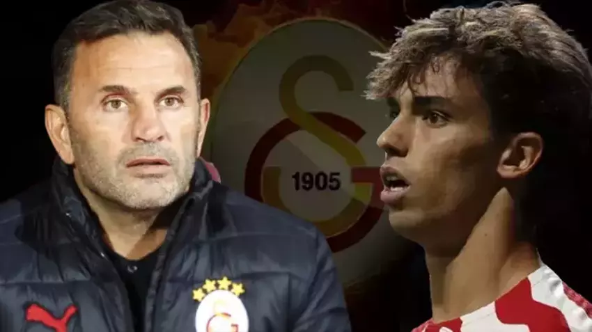

Anlaştılar: **Sezonun En Büyük Transfer Bombası Patladı!**
Yayınlanma Tarihi: 30 Kasım 2025
Uzun süredir devam eden transfer görüşmeleri mutlu sonla bitti. Ligin dev kulübü, Avrupa'nın dikkat çeken genç yeteneği ile **4 yıllık sözleşme** imzaladı. Oyuncunun, devre arası kampına katılması bekleniyor.
Kulüp kaynakları, bu transferin zorlu geçtiğini ancak teknik direktörün oyuncuyu kadroda görme isteği sayesinde engellerin aşıldığını belirtti. Ödenen bonservis bedelinin, kulüp tarihinin en yüksek ikinci transfer bedeli olduğu iddia ediliyor. Bu transfer, ligdeki şampiyonluk dengelerini kökten değiştirecek potansiyele sahip.
🎯 Teknik Direktörün Yorumu
Basın toplantısında konuşan teknik direktör, "Onu uzun zamandır takip ediyorduk. Takıma katacağı hız, teknik kapasite ve oyun zekası, bizi bambaşka bir seviyeye taşıyacak. Bu transfer, camiamız için hayırlı olsun," ifadelerini kullandı. Taraftarların sosyal medyadaki coşkusu ise görülmeye değerdi.
Oyuncunun, yeni takımıyla ilk maçına ne zaman çıkacağı merakla bekleniyor. Transferin detaylı maliyet tablosunun önümüzdeki günlerde KAP'a bildirilmesi bekleniyor.